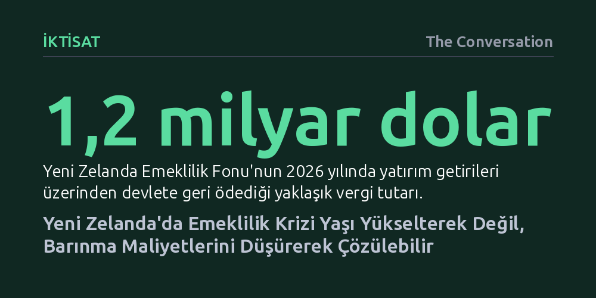

IKTISAT · The Conversation · 2026-10-08
Emeklilik sisteminin sürdürülebilirliği yalnızca emeklilik yaşını yükselterek sağlanamaz; asıl belirleyici unsur artan barınma maliyetleri ve bugünden yapılan fonlamadır. Konut krizini çözmeden emeklilik maaşını kısmak, kamu harcamalarını azaltmaz; bütçe yükünü yalnızca diğer sosyal yardımlara kaydırır.
Emeklilik krizinin tek boyutlu bir yaş tartışması olmadığını, konut politikası ve önceden fonlamayla doğrudan bağlantılı çok katmanlı bir refah dengesi olduğunu gösteriyor.

Birçok gelişmiş ekonomi gibi Yeni Zelanda da belirgin bir demografik dönüşümün eşiğinde duruyor. Doğurganlık oranları gerilerken ortalama yaşam süresi uzuyor ve buna bağlı olarak çalışan nüfusun emeklilere oranı hızla azalıyor. Mevcut yapı korunursa devletin sağladığı temel emeklilik maaşının (NZ Super) milli gelirden ve bütçe gelirlerinden aldığı pay katlanarak büyüyecek. Bu tablo karşısında Hazine'nin sistemin sürdürülebilirliğini sorgulaması ve hükümetin kamuoyunu olgun bir tartışmaya çağırması son derece anlaşılır bir adımdır.
Ne var ki siyaset arenasında dönen tartışma baştan sakat bir soru üzerine kurulmuş durumda. Kamuoyu sürekli olarak devletin bu maaşları ödemeye gücünün yetip yetmeyeceğini ve emeklilik yaşının 65'ten yukarı çekilip çekilmeyeceğini tartışıyor. Oysa sorulması gereken asıl soru bambaşka: Gelecek nesillere taşınamaz bir maliyet yüklemeden, yurttaşlara yeterli ve insan onuruna yaraşır bir emeklilik hayatı nasıl sunulabilir?
Bu ayrım laftan ibaret değildir; soruyu doğru kurduğunuzda emekliliğin tek bir maaş kaleminden ibaret olmadığını fark edersiniz. Refah içinde bir emeklilik basit bir denklemle özetlenebilir: Bireysel varlıklar ile devlet desteğinin toplamından, emeklilik döneminde katlanılan yaşam maliyetlerinin çıkarılması. Meseleye bu denklem üzerinden bakıldığında, tek çarenin emeklilik yaşını ötelemek olmadığı, önümüzde çok daha geniş bir politika alanı bulunduğu açıkça görülür.
Emeklilik denkleminin maliyet tarafına bakıldığında, tablonun en kritik belirleyicisinin barınma giderleri olduğu görülür. Tarihsel olarak Yeni Zelanda'da yurttaşların büyük bölümü 65 yaşına ulaştığında kendi evinin sahibiydi ve ipotek borcunu tamamen kapatmıştı. Kira ya da kredi taksiti ödemeyen bir emekli için devletin sağladığı temel emeklilik maaşı, insanca bir yaşam sürdürmeye fazlasıyla yetiyordu.
Ancak konut piyasasındaki sert fiyat artışları bu güvenceyi temelinden sarstı. Tırmanan gayrimenkul fiyatları nedeniyle yeni nesiller ev sahibi olmakta zorlanıyor, ipotek borçlarını çok daha ileri yaşlara kadar ödüyor ya da ömür boyu kiracı kalıyor. Bu durum, geleceğin emeklilerinin çok ciddi barınma maliyetleriyle karşı karşıya kalacağı anlamına geliyor. Dolayısıyla bugün konut erişilebilirliğini çözmek, doğrudan yarının emeklilik refahını güvenceye almak demektir.
Barınma gerçeğini görmezden gelerek emeklilik maaşlarını kısmaya kalkışmak ise kamusal açıdan büyük bir yanılsamadır. Kendi evi olmayan ve yüksek kiralarla boğuşan emeklilerin maaşı kesildiğinde devlet net tasarruf sağlamış olmaz; harcamalar yalnızca kira desteği veya acil yoksulluk ödenekleri gibi başka yardım kalemlerine kayar. Bir cebinden kısıp diğer cebinden ödeyen devlet, emeklileri daha derin bir bağımlılığa sürüklemekle kalır.
Yurttaşlar çalışma hayatları boyunca ne kadar çok kişisel varlık biriktirebilirse, emeklilikte devlete o kadar az bağımlı hale gelirler. Siyasi partilerin KiwiSaver gibi bireysel emeklilik planlarına yönelik katkı paylarını artırma, işveren katkısını yükseltme ya da getirilere vergi muafiyeti sağlama vaatleri tam da bu amaca dayanıyor. Bireysel tasarrufların büyümesi, gelecekte hükümetlere emeklilik maaşı kurallarını esnetebilecekleri bir manevra alanı kazandırabilir.
Ancak hiçbir tasarruf teşviki maliyetsiz değildir. Çalışan kesintisini artırmak bugünkü hanehalkı bütçesini daraltırken, işveren katkısını yükseltmek işletmelerin maliyetlerini artırıp genel ücret artışlarını frenleyebilir. Vergi indirimleri ise bütçe açığını kapatmak için başka vergilerin artırılmasını zorunlu kılar; üstelik düşük gelirli veya güvencesiz çalışanlar ne yapılırsa yapılsın yetersiz birikimle emekli olma riski taşır.
İşte bu noktada sistemin en çok ihmal edilen unsuru, yani Yeni Zelanda Emeklilik Fonu (NZ Super Fund) devreye giriyor. Gelecekteki vergi mükelleflerinin yükünü hafifletmek için bugünkü bütçeden ayrılan kaynaklarla beslenen bu ulusal servet fonu, ilginç bir çelişkiyle karşı karşıya. Fon, elde ettiği yatırım getirileri üzerinden devlete vergi ödüyor; nitekim 2026 yılında devlete yaklaşık 1,2 milyar dolar vergi aktarırken, devletin fona yaptığı nakit katkı bu tutarın oldukça gerisinde kaldı. Yani devlet, yarının emeklileri için biriktirdiği paranın önemli bir kısmını bugünün cari harcamalarına geri çekiyor. Oysa fon bünyesinde bırakılıp yüzde 7,2'lik getiriyle işletilseydi, bu 1,2 milyar dolar 30 yıl sonra yaklaşık 9,66 milyar dolarlık devasa bir kaynağa dönüşebilirdi.
Emeklilik açmazından kaçınmak isteyenlerin sıkça sarıldığı bir diğer argüman ise ekonomik verimlilik artışıdır. Ülkenin daha üretken olması durumunda refahın artacağı ve yaşlanan nüfusun rahatça finanse edilebileceği varsayılır. Oysa Yeni Zelanda'da devlet emeklilik maaşı doğrudan ortalama ücretlere endekslidir. Verimlilik arttıkça ücretler yükselecek, ücretler yükseldikçe emeklilere ödenen maaşlar da otomatik olarak büyüyecektir; Hazine modellemeleri verimlilik artışının mali açığı kapatmada şaşırtıcı derecede etkisiz kaldığını gösteriyor.
Kaldı ki verimlilik, hükümetlerin bir düğmeye basarak artırabileceği bir değişken değildir. Son 20 yılda yıllık ortalama yalnızca yüzde 0,7 gibi zayıf bir verimlilik artışı kaydedebilmiş olan ekonomi, önümüzdeki dönemde iklim krizi, yapay zekanın dönüştürücü etkileri ve küresel belirsizliklerle sınanacaktır. Emeklilik finansmanını mucizevi bir verimlilik patlamasına bağlamak, birikmiş konut kredisi borcunu piyango bileti alarak kapatmayı ummaktan farksızdır.
Emeklilik sistemini hem insani hem de mali açıdan sürdürülebilir kılmak onlarca yılda oluşmuş bir sorundur ve çözümü de on yıllar sürecek kararlı adımlar gerektirir. Tartışmayı sadece yaş sınırına hapsetmek yerine; konut maliyetlerini düşürmek, bireysel birikimleri desteklemek ve bugünün bütçesinden geleceğe ne kadar aktarılacağına dürüstçe karar vermek zorundayız. Karar almayı ertelediğimiz her gün elimizdeki seçenekler azalacak ve atılacak adımlar çok daha can yakıcı hale gelecektir.